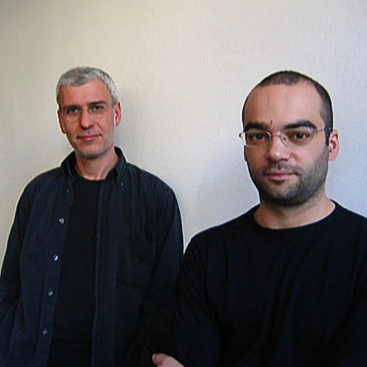

QUASAR
Quayola
Un quasar (contrazione di QUASi-stellAR radio source, cioè "radiosorgente quasi stellare") è un nucleo galattico attivo estremamente luminoso e generalmente molto distante dalla Terra (dell'ordine dei miliardi di anni luce). Il nome deriva dal fatto che questi oggetti, la cui natura è stata controversa fino ai primi anni ottanta, furono inizialmente scoperti come potenti sorgenti radio, la cui controparte ottica risultava puntiforme come una stella. Il grande spostamento verso il rosso che caratterizza i quasar, in accordo con la legge di Hubble, implica che siano oggetti molto distanti e che quindi debbano emettere energia equivalente a centinaia di normali galassie. Si ritiene comunemente che tale grande luminosità sia originata dall'attrito causato da gas e polveri che cadono in un buco nero supermassiccio; essi formano un disco di accrescimento, che converte circa la metà della massa di un oggetto in energia. Il termine QUASAR è stato coniato nel 1964 dall'astrofisico Hong-Yee Chiu.
AMMASSO DELLA VERGINE
Evelina Domnitch & Dmitry Gelfand
L'Ammasso della Vergine è il più vicino ricco ammasso di galassie. Con una distanza di "soli" 60 milioni di anni luce, molte delle sue galassie sono visibili con piccoli telescopi. Si tratta di un tipico ricco ammasso di galassie, con circa 1500 membri. La sua grande massa è causa delle grandi velocità peculiari di molte delle sue galassie, a volte fino a 1.600 km/s (rispetto al centro dell'ammasso). Per confronto, lo spostamento verso il rosso dell'ammasso corrisponde ad una velocità di soli 1.100 km/s.
NUBE DI SMITH
Ryoji Ikeda
Una nube di gas scoperta da Gail Smith negli anni Sessanta nello spettro radio, attraverso le emissioni di idrogeno e per questo chiamata Nube di Smith. Per anni ci si è interrogati sulla natura: una galassia satellite che ha la peggio rispetto alla nostra oppure un grumo di gas come ce ne dovrebbero esser molti, ma stavolta tanto vicino da poter essere osservato in maniera abbastanza dettagliata. Se la nube fosse originaria delle zone intergalattiche, la sua composizione sarebbe data prevalentemente da idrogeno e elio e invece, a sorpresa, è risultata una quantità di zolfo del tutto simile a quella del disco galattico. La Nube di Smith, in pratica, sembra esser stata espulsa dalla Via Lattea circa 70 milioni di anni fa e si appresta a un grande rientro entro 30 milioni di anni.
SAGITTARIO
Tomas Saraceno
Il Sagittario (in latino Sagittarius, abbreviato in Sgr) è una costellazione dello zodiaco, comunemente raffigurato come un centauro tendente un arco; si trova tra lo Scorpione ad ovest e il Capricorno ad est e contiene al suo interno il centro galattico e un gran numero di oggetti galattici.La costellazione contiene al suo interno il centro galattico e infatti la scia della Via Lattea è qui particolarmente luminosa; è possibile distinguere due regioni principali: la Grande Nube del Sagittario, che occupa gran parte del settore più occidentale della costellazione sul confine con l'Ofiuco e lo Scorpione, e la Piccola Nube del Sagittario, coincidente con l'oggetto M24.
MARTE
ANF
Marte è il quarto pianeta del sistema solare in ordine di distanza dal Sole, è visibile ad occhio nudo ed è l'ultimo dei pianeti di tipo terrestre dopo Mercurio, Venere e la Terra. Chiamato il Pianeta rosso a causa del suo colore caratteristico dovuto alle grandi quantità di ossido di ferro che lo ricoprono, Marte prende il nome dall'omonima divinità della mitologia romana e il suo simbolo astronomico è la rappresentazione stilizzata dello scudo e della lancia del dio
LEGAMI
Gregory Chatonsky
Si ha un legame chimico quando una forza di natura elettrostatica tiene uniti più atomi in una specie chimica (legami forti, o primari o intramolecolari) o più molecole in una sostanza allo stato condensato (legami deboli, o secondari o intermolecolari). I legami chimici "più forti" hanno un contenuto energetico maggiore e sono più difficili da rompere, mentre i legami minori hanno un contenuto energetico minore e sono più facili da rompere. Da ciò deriva che le molecole che hanno al loro interno legami chimici più deboli sono più instabili. Inoltre tanto più un legame è forte, tanto minore è la lunghezza del legame, essendo la forza che tiene uniti gli atomi maggiore.
DEMOCRITO
Paul Prudence
Secondo Democrito tutta la realtà è costituita da atomi che si muovono incessantemente nel vuoto. Gli atomi sono particelle elementari, indivisibili, differenti tra loro solo per caratteristiche quantitative o oggettive come la forma, la grandezza, l’ordine e la posizione, dotate di movimento eterno che è ad esse connaturato. L’incessante movimento porta gli atomi ad aggregarsi e a separarsi, dando luogo alla nascita, alla trasformazione e alla morte di tutto ciò che esiste. Le cose sono pertanto combinazioni di atomi. Anche l’uomo è una realtà esclusivamente materiale e l’anima non è differente dal corpo se non per il fatto che è composta da atomi sottilissimi, mobilissimi, tondi e lisci.
99,9% DI VUOTO
Semiconductor
Immaginiamo un’arancia che cresca fino a raggiungere le dimensioni della Terra. A questo punto gli atomi dell’arancia sarebbero grandi come ciliegie. Miriadi di ciliegie strettamente impacchettate in un globo delle dimensioni della Terra: ecco un’immagine ingrandita degli atomi di un’arancia. Questo atomo è tuttavia enorme se confrontato con il suo nucleo, che sta al centro. Nella nostra immagine degli atomi-ciligie, il nucleo sarebbe così piccolo da non poterlo nemmeno vedere. È quindi necessario ingrandire l’atomo fino alle dimensioni della più grande cupola al mondo, quella della basilica di S.Pietro a Roma, per poter intravedere il nucleo dell’atomo, grande come un granello di sale.
MULTIVERSI
Tomonaga Tokuyama
In fisica moderna il multiverso è un'ipotesi che postula l'esistenza di universi coesistenti fuori del nostro spaziotempo, spesso denominati dimensioni parallele. Il concetto di multiverso fu proposto in modo rigoroso per la prima volta da Hugh Everett III nel 1957 con l'interpretazione a molti mondi della meccanica quantistica. Successivamente è stato riaffermato come possibile conseguenza di alcune teorie scientifiche, specialmente la teoria delle stringhe e quella dell'inflazione caotica (teoria delle bolle). Dal punto di vista filosofico l'ipotesi è antica, essendo stata posta come pluralità dei mondi simili alla Terra già dagli atomisti greci, e trovò nuovo vigore dopo la rivoluzione copernicana con la scoperta della grandezza effettiva dell'universo, contenente miliardi di galassie. Un precursore dell'idea moderna di multiverso fu il filosofo rinascimentale Giordano Bruno.
INFINITE REALTÀ
Andreas Nicholas Fisher
Immaginate di stare seduti al tavolo da gioco per una partita di poker. Vi vengono date le carte. Per quanto forte sia il vostro desiderio di trovarvi una buona mano, non saprete che carte sono finché non le girate. Immaginate ora che, con quel semplice gesto, la realtà cambi, prendendo diverse direzioni: in una vi troverete in mano delle carte buone per una scala, in un’altra potrete fare una doppia coppia o un tris, in un’altra ancora – molto fortunata – un bel poker. In molte altre, vi troverete solo delle carte inutili. Nulla di tutto questo accade davvero, secondo la nostra esperienza. Eppure questa “scissione” della realtà sembra avvenire a una scala infinitamente piccola, quella regolata dalle leggi della fisica quantistica, ed è un fenomeno con i quali gli scienziati fanno i conti da oltre sessant’anni.
BIG BANG
Onedotzero
Secondo il modello del Big Bang, l'universo si espanse da uno stato iniziale estremamente denso e caldo e continua ad espandersi oggi. Una comune analogia spiega che lo spazio stesso si sta espandendo, portando le galassie con sé, come l'uvetta in un panettone che lievita. Questa immagine è una rappresentazione artistica che illustra l'espansione di una porzione di un universo piatto. Il Big Bang è un modello cosmologico basato sull'idea che l'universo iniziò a espandersi a velocità elevatissima in un tempo finito nel passato a partire da una condizione di curvatura, temperatura e densità estreme e che questo processo continui tuttora.
GRANDE ATTRATTORE
Limiteazero
In astronomia, il Grande Attrattore è un ammasso di galassie che si trova in corrispondenza del centro gravitazionale di Laniakea, il superammasso locale a cui appartiene anche la Via Lattea. La forza gravitazionale esercitata dal Grande Attrattore influenza il moto di circa 100.000 galassie (inclusa la Via Lattea) contenute all'interno di una regione grande centinaia di milioni di anni luce. Le galassie contenute nel Grande Attrattore sono tutte spostate verso il rosso in accordo con la Legge di Hubble, come se si stessero allontanando da noi e ognuna dall'altra. Ma ognuna mostra, sovrapposto a questo spostamento, un moto generale sufficiente a rivelare all'interno dell'Attrattore una concentrazione di massa equivalente a decine di migliaia di galassie.
GALASSIA DEL DRAGO
Density Design
Quella del Dragone è una delle costellazioni più grandi della volta celeste; si presenta completamente circumpolare fino alle latitudini temperate boreali, come le regioni del bacino del Mediterraneo. Il gruppo della testa è rappresentato da quattro stelle, le più luminose delle quali sono chiamate Eltanin e Rastaban: la prima possiede una grande importanza storica, poiché fu misurando la parallasse di questa stella che James Bradley scoprì nel 1725 il fenomeno dell'aberrazione della luce, che costituisce una delle prime prove della rotazione della Terra attorno al Sole. Il resto della costellazione si snoda attorno al polo nord celeste, insinuandosi fra l'Orsa Maggiore e l'Orsa Minore, circondando quest'ultima sui lati est, sud ed ovest; le stelle del Dragone al di fuori del quadrilatero della testa sono per lo più di terza e quarta magnitudine, organizzate in allineamenti.
BRACCI DI SPIRALE
Sebastian Sadowski
Può sembrare assurdo, ma i bracci di spirale non sono altro che delle enormi onde sonore che si propagano in modo indipendente dalla materia sul disco delle galassie a spirale. In linguaggio più tecnico si definiscono onde di densità, ma il principio fisico alla base della loro formazione è identico a quello che ci consente di sentire il suono qui sulla Terra, con una piccola differenza: stiamo infatti osservando dei mostri estesi per decine di migliaia di anni luce, quindi anche le onde sonore che si sviluppano sono mostri con una lunghezza d’onda di altrettante migliaia di anni luce. Di fatto, è impossibile per qualsiasi apparato percepire il suono associato a queste speciali onde sonore, ma questo non rende di certo meno valida la loro esistenza.
COMETA DI HALLEY
Onedotzero
La cometa di Halley, il cui nome ufficiale è 1P/Halley, è la più famosa e brillante delle comete periodiche provenienti dalla Fascia di Kuiper, le quali passano per le regioni interne del sistema solare ad intervalli di decine di anni, a differenza delle migliaia di anni delle comete provenienti dalla Nube di Oort. È così chiamata in onore di Edmond Halley, che per primo ne predisse il ritorno al perielio. La cometa di Halley è il prototipo di comete caratterizzate da periodi orbitali compresi tra i 20 ed i 200 anni ed orbite che possono presentare inclinazioni elevate rispetto al piano dell'eclittica

COSTANTE DI PLANCK
Mike Brondjberg
La costante di Planck, anche detta quanto d'azione e indicata con {\displaystyle h} h, è una costante fisica che rappresenta l'azione minima possibile, o elementare. Essa determina che l'energia e le grandezze fisiche fondamentali ad essa legate non evolvano in modo continuo, ma siano quantizzate, ovvero possano assumere solo valori multipli di tale costante. La costante di Planck ha le dimensioni di un'energia per un tempo e nel sistema di unità di misura delle unità atomiche compone l'unità di misura del momento angolare. Essa permette la quantizzazione di grandezze come l'energia, la quantità di moto e il momento angolare, e la sua scoperta ha avuto un ruolo determinante per la nascita e la successiva evoluzione della meccanica quantistica. È inoltre una delle costanti fondamentali che definiscono la costante di struttura fine o costante di Sommerfeld.
LA MISURA
Onedotzero
Ecco, il ‘problema della misura’ in meccanica quantistica, tutto sommato, può essere ridotto alla questione: ‘dov’è la Luna quando nessuno la osserva?’. Ai non esperti del mondo dei quanti la domanda può sembrare bizzarra. Nessuno dubita che la ‘nostra’ Luna, quella grossa e macroscopica che illumina la notte, sia lì, nel cielo, anche se né Einstein, né alcun fisico, né noi, né alcun altro la guarda. La Luna è lì, in una precisa posizione dello spazio, e si muove con una determinata velocità orbitando intorno alla Terra, anche se nessuno effettua una qualsivoglia misura. La ‘realtà’ della Luna, sembra persino pleonastico affermarlo, è indipendente dalla misura.